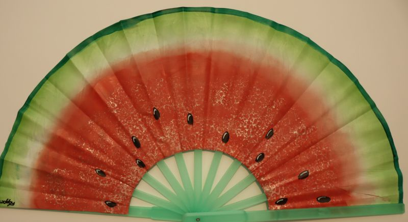
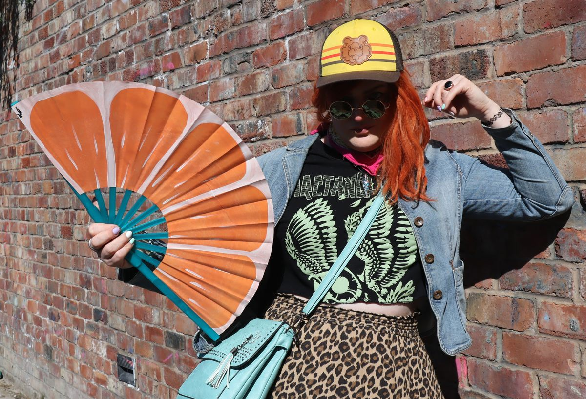
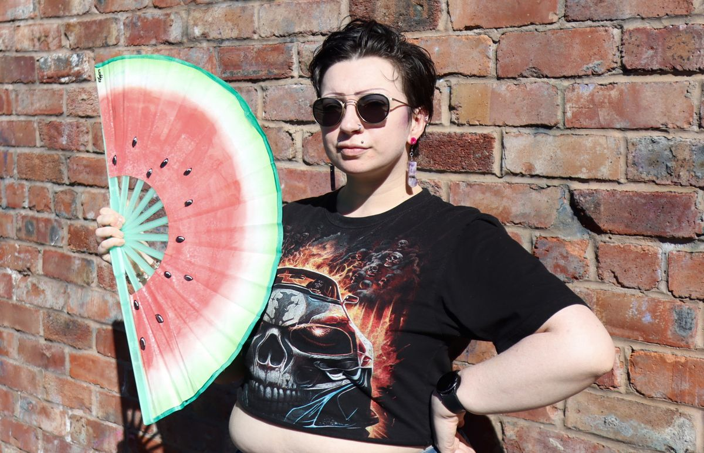
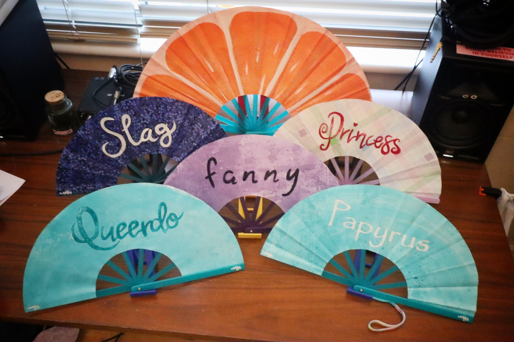
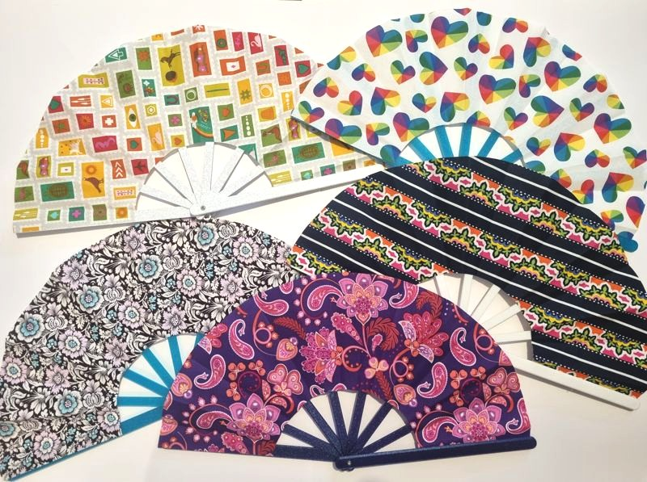
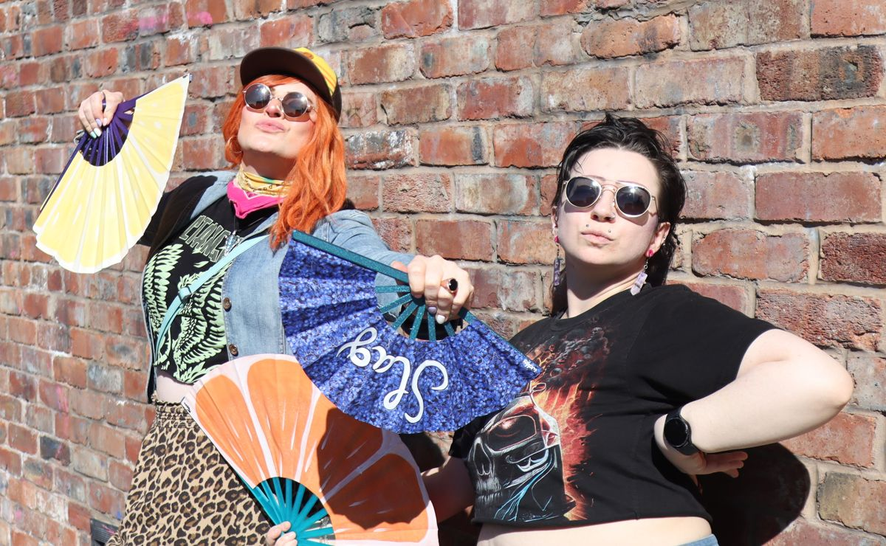
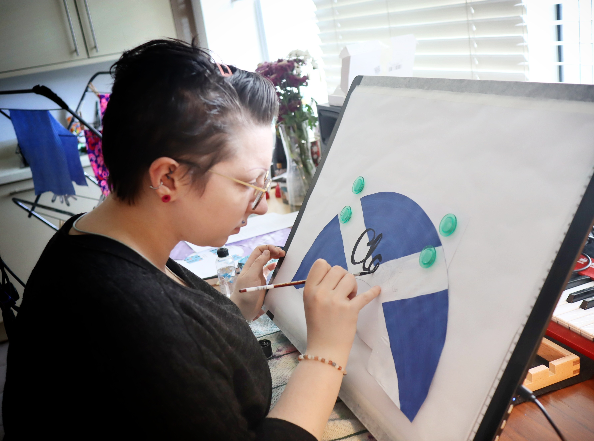

Welcome to Wobby World!
Based in Manchester, we make hand fans to help hot people stay cool.
Fans
FRUIT



Good enuff to eat. Cool and refreshing. Shelf life: indefinite.
(Please don't eat them, they're made of plastic)
34cm radius, hand painted, 0% real fruit juice
pithy phrases and/or sayings


"Would it be funny if I put x on a fan?"
"IDK probly not do it anyway"
(Yes, we do take requests)
22cm radius, hand painted, 100% asbestos free

About us
We are Verity (she/her) and Luce
(they/them or she/her), couple of
legends losers living in Manchester with a love of going
out dancing where a hand fan is ESSENTIAL! and very effective for
making friends.

And after breaking one too many fans we said enuff is enuff!! If we make our own then we can repair them!
The fan frames are designed, prototyped, modelled, and made completely in house (well, in flat to be precise).
we then buy fabric, paint questionable things on them, slap them on a frame, then call it day

(Yeah it's a bit more involved than that)